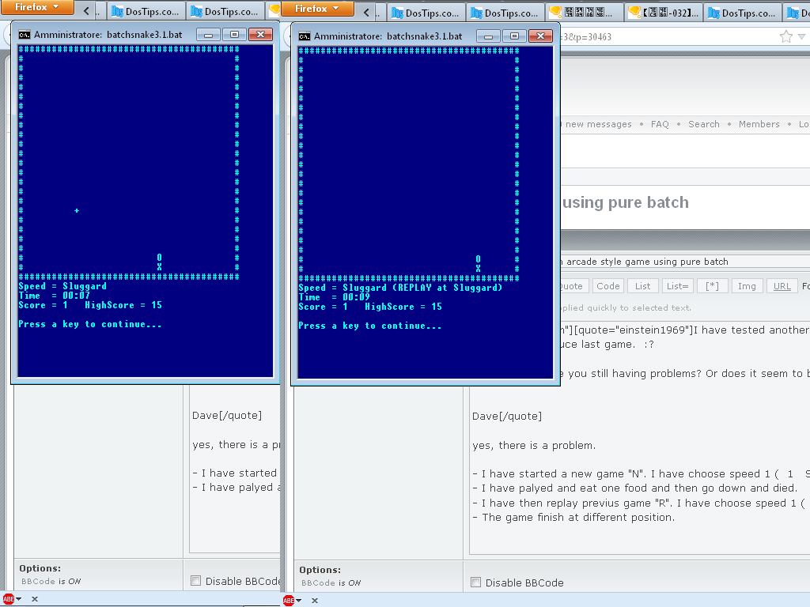

Einstein1969
SNAKE.BAT 4.1 - An arcade style game using pure batch
Moderator: DosItHelp
-
einstein1969
- Expert
- Posts: 762
- Joined: 15 Jun 2012 13:16
- Location: Italy, Rome
Re: SNAKE.BAT - An arcade style game using pure batch
I have tested another game and the replay of last game not reproduce last game. 
Einstein1969
Einstein1969
Re: SNAKE.BAT - An arcade style game using pure batch
einstein1969 wrote:I have tested another game and the replay of last game not reproduce last game.
I'm confused. Are you still having problems? Or does it seem to be working now?
Dave
-
einstein1969
- Expert
- Posts: 762
- Joined: 15 Jun 2012 13:16
- Location: Italy, Rome
Re: SNAKE.BAT - An arcade style game using pure batch
dbenham wrote:einstein1969 wrote:I have tested another game and the replay of last game not reproduce last game.
I'm confused. Are you still having problems? Or does it seem to be working now?
Dave
yes, there is a problem. The game replayed is not equal. Sometimes the path change or sometimes the food is not displayed or displayed at different position.
- I have started a new game "N". I have choose speed 1 ( 1 Sluggard 0.20 )
- I have palyed and eat one food and then go down and died.
- I have then replay previus game "R". I have choose speed 1 ( 1 Sluggard 0.20 )
- The game finish at different position.

einstein1969
Re: SNAKE.BAT - An arcade style game using pure batch
Perfect  I was able to diagnose the problem with that info. It is a problem with how I waited for the appearance of a file to indicate the input buffer had been loaded.
I was able to diagnose the problem with that info. It is a problem with how I waited for the appearance of a file to indicate the input buffer had been loaded.
I assumed that attempting to delete a non-existent file would raise an error. It does print an error message to stderr, but it does NOT raise an error. I've got a fix, but I won't release it until I finish some other changes, hopefully today.
Dave Benham
I assumed that attempting to delete a non-existent file would raise an error. It does print an error message to stderr, but it does NOT raise an error. I've got a fix, but I won't release it until I finish some other changes, hopefully today.
Dave Benham
Re: SNAKE.BAT 3.2 - An arcade style game using pure batch
I've posted version 3.2 on the first post of this thread.
I fixed the replay bug - Thanks for your help einstein1969.
I also added the ability to save a previous game or a high score game to the current directory using a user specified file name, with an implicit extension of .snake
You can then load and watch any saved game that exists in the current directory. The loaded game will never over-write your current high score.
Dave Benham
I fixed the replay bug - Thanks for your help einstein1969.
I also added the ability to save a previous game or a high score game to the current directory using a user specified file name, with an implicit extension of .snake
You can then load and watch any saved game that exists in the current directory. The loaded game will never over-write your current high score.
Dave Benham
Re: SNAKE.BAT 3.2 - An arcade style game using pure batch
My current high score
----------------------
speed: crawl
score: 202
time: 20:20
replay download: https://www.dropbox.com/s/mi6lm02y6y07x ... _202.snake
Place the downloaded file in the same directory as SNAKE.BAT, and then run SNAKE from that directory. Press "L", and then enter "Crawl_202". Finally, pick a speed to run the replay at. It takes 04:04 at Insane speed, 20:20 at the original Crawl speed.
Dave Benham
----------------------
speed: crawl
score: 202
time: 20:20
replay download: https://www.dropbox.com/s/mi6lm02y6y07x ... _202.snake
Place the downloaded file in the same directory as SNAKE.BAT, and then run SNAKE from that directory. Press "L", and then enter "Crawl_202". Finally, pick a speed to run the replay at. It takes 04:04 at Insane speed, 20:20 at the original Crawl speed.
Dave Benham
Re: SNAKE.BAT 3.2 - An arcade style game using pure batch
That's some heroic gameplay LOL I replayed it on fast.
Re: SNAKE.BAT 3.2 - An arcade style game using pure batch
This is an amazing piece of work, dbenham.
I had totally forgotten how addictive this game is
I have one question/suggestion: How about a button to pause while playing?
I had totally forgotten how addictive this game is
I have one question/suggestion: How about a button to pause while playing?
Re: SNAKE.BAT 3.2 - An arcade style game using pure batch
AiroNG wrote:How about a button to pause while playing?
Great idea
Updated code (version 3.3) has been posted to the first post in this thread.
Dave Benham
Re: SNAKE.BAT 3.3 - An arcade style game using pure batch
@Dave: when I replay the game, i cannot stop the animation?
There a way for ignore keys in the buffer?
If the game speed is slow, and the snake go to left for example, and I press left 5 times, and the snake need go up for avoid collision, and I press up, the snake take the first key in the buffer, that is left, and collide.
There a way for ignore keys in the buffer?
If the game speed is slow, and the snake go to left for example, and I press left 5 times, and the snake need go up for avoid collision, and I press up, the snake take the first key in the buffer, that is left, and collide.
Re: SNAKE.BAT 3.3 - An arcade style game using pure batch
carlos wrote:@Dave: when I replay the game, i cannot stop the animation?
There a way for ignore keys in the buffer?
If the game speed is slow, and the snake go to left for example, and I press left 5 times, and the snake need go up for avoid collision, and I press up, the snake take the first key in the buffer, that is left, and collide.
Just to be clear - You are requesting a new feature - to be able to abort a replay of a game. You are not reporting a bug. Correct
Currently, if you start a game replay, then you must wait for the replay to finish, or you must close the console window. There is no clean way to abort a game replay once it is started.
I thought about adding a replay abort feature, but it is a bit complex. I would need yet another communication channel (file), and there are some inter-process timing and synchronization issues to work out. I'm not really interested in putting forth that effort at the moment.
Dave Benham
Re: SNAKE.BAT 3.3 - An arcade style game using pure batch
I've posted a demo of SNAKE.BAT on YouTube - http://youtu.be/9EZeDoZjnsc
Re: SNAKE.BAT 3.4 - An arcade style game using pure batch
I reconsidered the request from carlos to provide a way to abort a replay, just in case you don't want to wait for a long replay to finish.
I've posted version 3.4 to the first post in this thread. You can now press a key during a replay, and the replay will abort. It may take some time for the abort to complete (the input buffer must be purged). But it is much faster than waiting for the replay to complete.
I was able to figure a way to quickly purge the input buffer fairly quickly. But getting the game and controller inter-process communication correct was difficult. It doesn't take much code, but it took a long time to figure it out.
But now it works
Dave Benham
I've posted version 3.4 to the first post in this thread. You can now press a key during a replay, and the replay will abort. It may take some time for the abort to complete (the input buffer must be purged). But it is much faster than waiting for the replay to complete.
I was able to figure a way to quickly purge the input buffer fairly quickly. But getting the game and controller inter-process communication correct was difficult. It doesn't take much code, but it took a long time to figure it out.
But now it works
Dave Benham
Re: SNAKE.BAT 3.4 - An arcade style game using pure batch
Thanks Dave.
Please you can help to understand how works the code. I not understand why you use &9?
Can you explain a generally how works all the code, the communication between parts?.
Please you can help to understand how works the code. I not understand why you use &9?
Can you explain a generally how works all the code, the communication between parts?.
Re: SNAKE.BAT 3.4 - An arcade style game using pure batch
carlos wrote:Thanks Dave.
Please you can help to understand how works the code. I not understand why you use &9?
Can you explain a generally how works all the code, the communication between parts?.
Ouch, you had to ask about that - the interprocess communication was probably the hardest thing to develop.
Are you the same Carlos that developed the XCOPY technique for hidden password input? That was very clever, and worked well for this application.
SNAKE.BAT requires a non-blocking method to read a key press. The only native methods to read a key press are CHOICE (not native to XP), and the XCOPY hack (works on all Windows from XP onward). But both methods are blocking. The only way to make it non-blocking is to use two processes, one for input (the controller), and the other for all game logic and screen output (the game).
The controller is responsible for reading key presses from stdin, and the game is responsible for writing info to the screen using stdout and/or stderr. Both the controller and the game run within the same console window, so they must share the console input and output. In order to avoid interference, the controller has stdout and stderr redirected to nul, and the game has stdin redirected to nul.
The controller must have a way to pass the key press information to the game. That is the job of the key file. The key file is assigned to non-standard stream 9.
The game needs the controller to operate in different modes, so the game must be able to send commands to the controller. That is the job of the command file. The command file is assigned to stream 8.
See viewtopic.php?p=14612#p14612 for an explanation of how non-standard streams work with batch. I could have used streams 3 and 4, but based on the information in the link, I thought it might be a bit safer to use higher numbered streams.
The controller writes to &9, and reads from &8. Conversely, the game writes to &8 and reads from &9. The files serve as buffers to allow for asynchronous communication. The controller waits for a key press. When it receives one, it writes it to the key file. The game checks for a key press by reading from the same key file. If there is a new key waiting, then it will be read. If no key has been received, then the read will return nothing. The controller can write multiple lines to the key file before the game reads them. The game can then read each line when it is ready. The command file works the same but in reverse.
A game replay is achieved by commanding the controller to copy the contents of a game log to the end of the key file. It may take time to copy the file, so it signals the game when the copy is complete by creating a signal file. The game will not attempt to start the replay until it receives the signal (detects the file), at which point it immediately deletes the signal file and begins the replay.
During replay, the game reads the keys in exactly the same way as before, except now the game also reads the next food location from the key file as well, rather than computing a random location.
There are times when the game should only respond to key presses that occur after a prompt. The game sends a "prompt" command to the controller. The controller will read the command after the next key press, and send a {purged} message to the key file before sending the actual key press. The game then purges the key buffer by reading the file until it reads the {purged} marker. The next key will be the beginning of the desired input.
During game replay, when the controller gets a key press, it will send an abort signal to the game instead of sending the key to the key file. It will also send the {purged} message as well as a dummy key to the key file. The signal is again achieved by creating an empty signal file. When the game detects the signal, it purges the existing key buffer exactly as before. The controller will ignore any "prompt" command while the signal file remains, so that it does not send an unwanted second {purged} message. Once the game finishes purging the key file and reads the dummy character, it deletes the signal file so that the controller will respond to commands again.
Note that I did not invent the technique of using files as a way of establishing communication between batch processes. A few years ago there was a DosTips thread that showed a method to do it. I believe jeb contributed to the thread. Unfortunately I cannot find the thread. I did not fully understand the thread at the time, so my memory is very hazy.
When I got the idea to do an arcade game in batch, I found Kolt Koding's Batch Snake program that had a crude implementation of inter-process communication between batch files. For all I know, Kolt Koding may have initiated the DosTips thread, or he may have read it, or he may have came up with the idea on his own. I downloaded Kolt's code, and at this point I was in a position to better understand the concepts. I developed my own version of interprocess communication via file, making what I believe to be significant improvements.
I hope this helps your understanding. But I must confess that I get confused when I read what I just wrote. Unfortunately, I don't have a better explanation.
Dave Benham